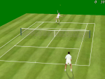
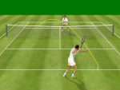
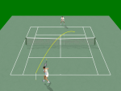
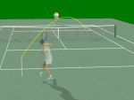
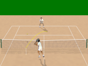
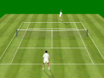

Free Tennis
hosted
by
Free Tennis |
hosted
by |
|  |  |  |
| Grass, camera low. The player above is serving. | Grass, camera low. The player below is doing a passing shot. Notice the visible parabola. Passing shots must be low above the net, otherwise the opponent will play a killing volee. | Cement, camera height medium. The player below is playing a topspin backhand. As you change the bounce point and the height above the net, you see the parabola change. |
|  |  |  |
| Cement, camera very low. The player below is transparent in order not to hide the scene. Notice the shadows reflect the gestures. | Clay, camera height medium. The player is doing a backhand volee. | Grass, camera low. The player above is doing a backhand. You don't see the parabola because it is a computer-driven player. |
|
Changelog (latest release or AnonCVS) |
News
|
About Free TennisWelcome to the home page of Free Tennis, a free tennis simulation. The most notable features of Free Tennis are:
Free Tennis is created by Maurizio Colucci. Free Tennis is dedicated to Charles Darwin. |
{kind=link}
{kind=link}
{kind=link}
{kind=link}
{kind=link}
{kind=link}